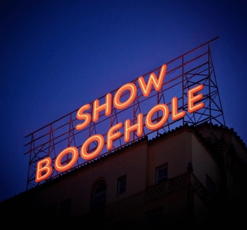
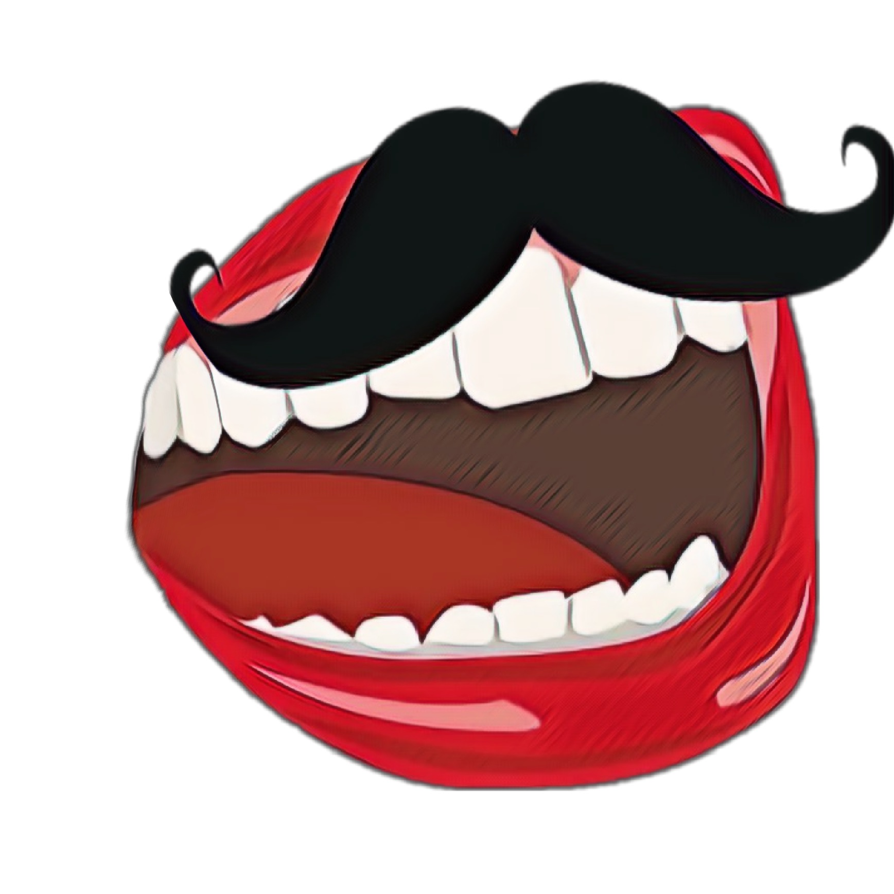
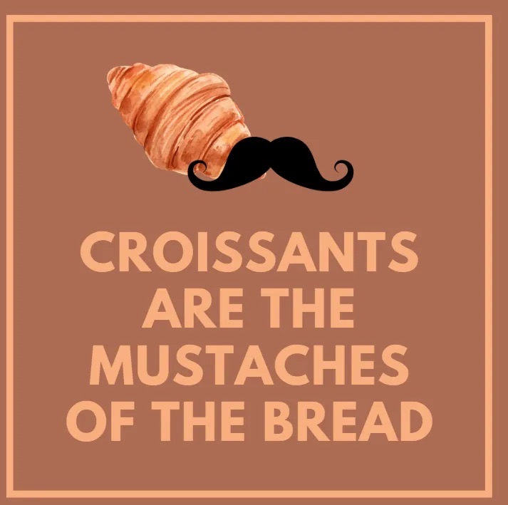

The Online Commune
Welcome to the Digital Prophet's Domain
I am your digital prophet, guide of this mysterious commune where hidden truths meet ancestral wisdom. Here, we explore forbidden connections between nature, cosmic conspiracies, and the dark forces governing reality.
⚠️ WARNING: If I suddenly disappear, you'll know the Kool-Aid Man has come for me. Truth disturbs certain entities.
Explore the Commune
Featured Research Topics



Current investigations: Quantum mechanics vs sobriety, corporate mascot manipulation, and extreme inbreeding affects 1 in 3652 individuals - the royal genetic terrorism continues.